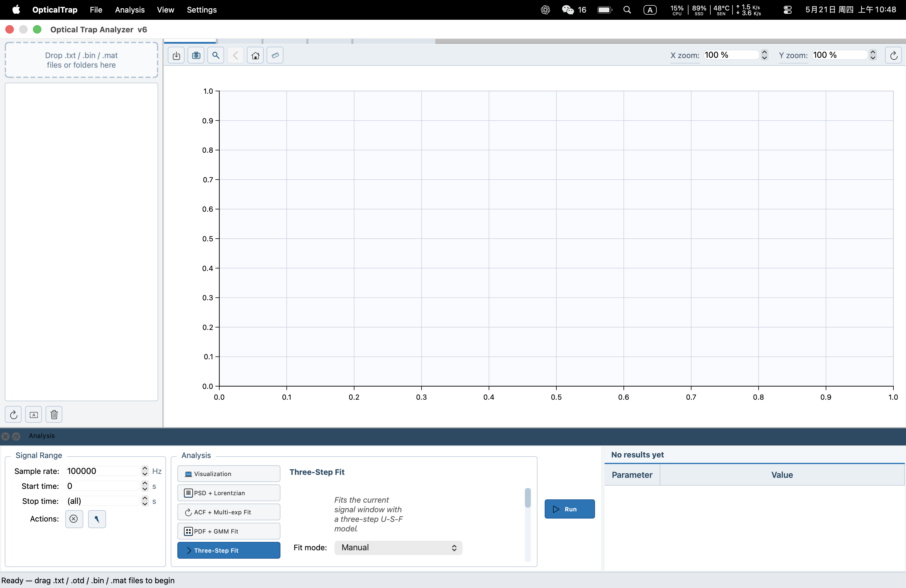
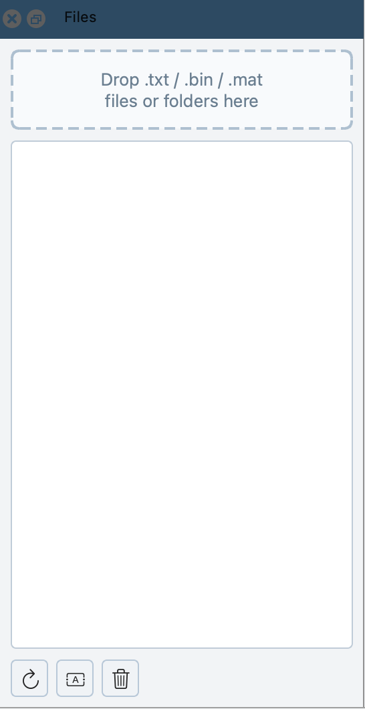
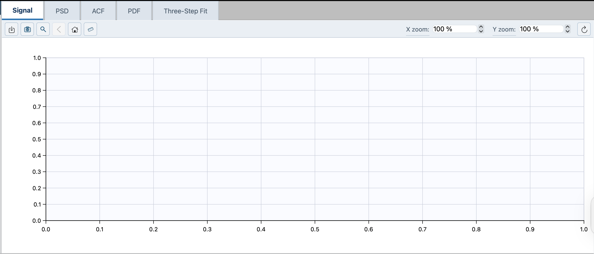
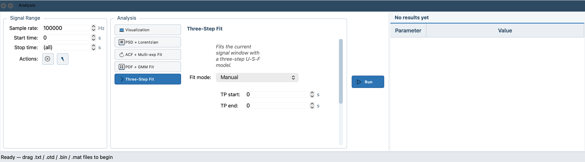
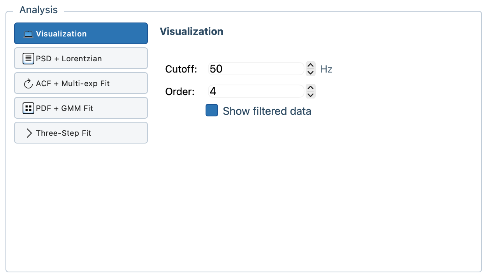
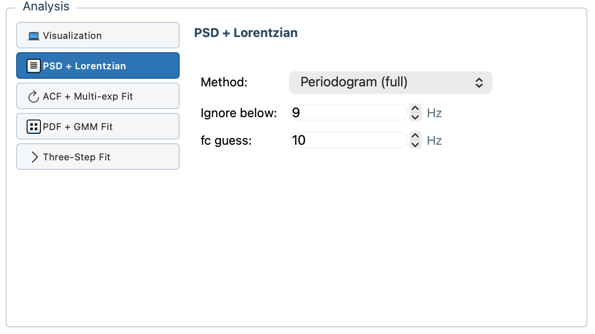
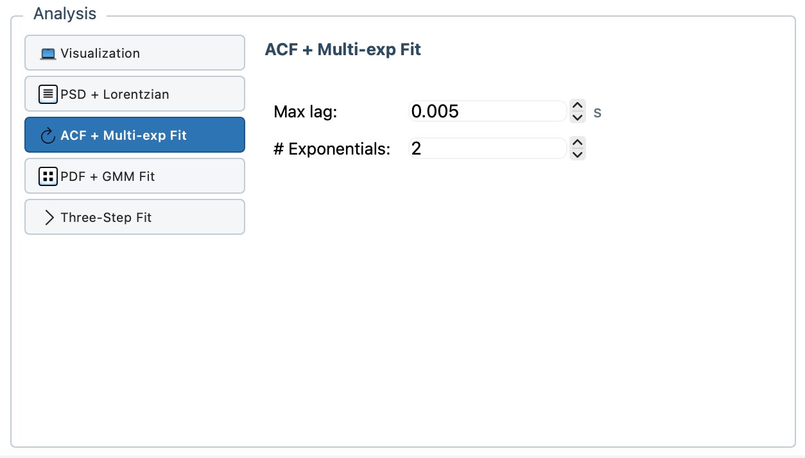
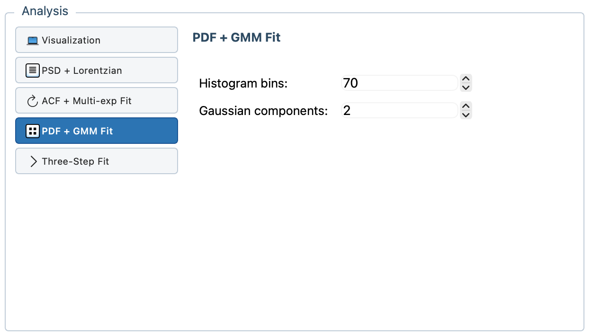
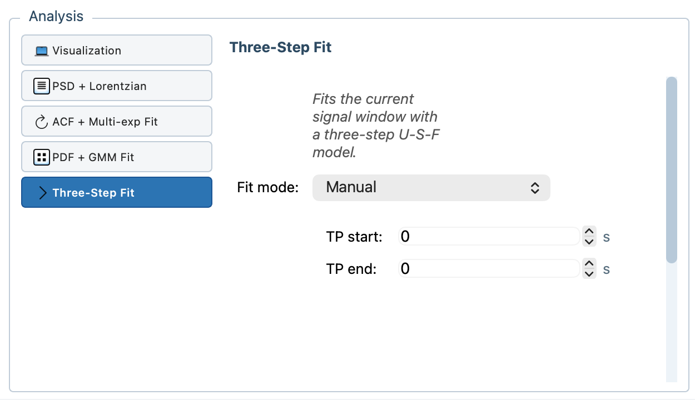

Visualization
Basic signal inspection and filtered viewing for defining the signal window and reviewing raw or filtered traces before higher-level analysis.
Native C++/Qt desktop software for optical trapping data analysis, designed to replace slower MATLAB-style workflows with an integrated interface for data conversion, visualization, and analysis.

| Format | Description | Likely source / instrument |
|---|---|---|
.txt |
Text-based signal import. The code looks for AI Channel 0
when present and also supports multi-column numeric text input.
|
Typically exported from National Instruments DAQ workflows |
.bin |
Binary waveform import using the AG10 format. |
Keysight / Agilent DSO-series oscilloscopes |
.mat |
MATLAB 5 waveform import. The parser reads fields such as
A, Tstart, Tinterval, and
Length.
|
PicoScope-exported MATLAB files |
.psdata |
Detected by the software, but not imported directly because the format is proprietary. | PicoScope session files; export to .mat first |
.otd |
Internal Optical Trap Data format used after conversion. | OpticalTrap internal analysis format |

.otd, and loading
converted recordings.


Basic signal inspection and filtered viewing for defining the signal window and reviewing raw or filtered traces before higher-level analysis.
Power spectral density analysis and Lorentzian fitting for examining frequency-domain behavior and extracting characteristic spectral parameters.
Autocorrelation analysis with one or more exponential terms for characterizing time correlations and relaxation-like behavior.
Probability distribution analysis with Gaussian mixture fitting for identifying multiple populations or states in a measurement.
Transition fitting based on a three-state interpretation of the
signal: U before transition, S during
transition, and F after transition. It supports Auto
mode and Manual mode.





.otd when needed..psdata files are recognized but cannot be converted directly..psdata to .mat first..otd is the preferred internal format for repeated analysis and faster loading.